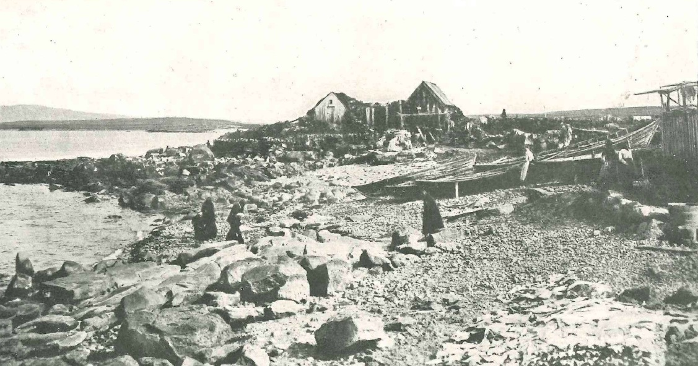

1838 – 1931
Myndin sýnir gamla Klapparbæinn sem Klapparstígur er kenndur við. Klapparvör með bátum Skuggahverfinga er í forgrunni, en þaðan þótti gott útræði. Handan við Klöpp var bærinn Skuggi sem Skuggahverfið er kennt við. Myndin er tekin árið 1899. Klöpp byggðist út úr landi bæjarins Arnarhóls árið 1838. Býlið stóð á hárri klöpp, sem það dró nafn sitt af.
Maður að nafni Eyjólfur Þorkelsson reisti fyrsta bæinn á Klöpp. Sonur hans, Níels Eyjólfsson, var ábúandi þar um áratuga skeið ásamt Helgu konu sinni. Þau ræktuðu mikla kálgarða við bæinn suðvestanverðan, þar sem síðar reis Trésmiðjan Völundur. Síðasta íbúðarhúsið á Klöpp var rifið árið 1931, þremur árum fyrr hafði fyrirtækið British Petroleum Company (síðar Olís) tekið í notkun olíustöð sína framan á klöppinni. Bensínstöðin var starfrækt fram á níunda tug síðustu aldar. Verulegar landfyllingar hafa átt sér stað og klöppin sem bærinn var kenndur horfin sem og Klapparvör.
